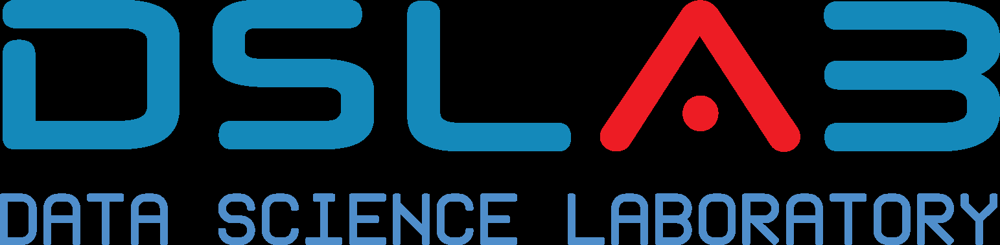

Escuela Técnica Superior de
Ingeniería Informática
Ingeniería Informática
Optimización y Análisis de Redes
Apuntes de la Asignatura
Grado en Matemáticas
Autores
Víctor Aceña Gil
Antonio Alonso Ayuso
2026-2027

Copyright © 2026 Víctor Aceña Gil, Antonio Alonso Ayuso. Esta obra está licenciada bajo CC BY-SA 4.0, Creative Commons Atribución-Compartir Igual 4.0 Internacional.
MATERIAL DOCENTE EN ABIERTO · UNIVERSIDAD REY JUAN CARLOS · JUNIO 2026